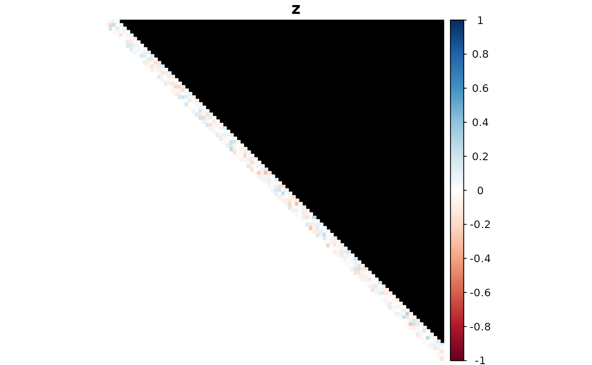

This function is a wrapper for ldest() for estimating LD
along a sliding window of a fixed size. Support is provided for parallelization through the
foreach and doParallel packages.
One of two possible inputs:
A matrix of genotypes (allele dosages). The rows index the
SNPs and the columns index the individuals. That is,
genomat[i, j] is the allele dosage for individual
j in SNP i. When type = "comp", the
dosages are allowed to be continuous (e.g. posterior
mean genotypes).
A three-way array of genotype log-likelihoods.
The first dimension indexes the SNPs, the second dimension
indexes the individuals, and the third dimension indexes
the genotypes. That is, genolike_array[i, j, k]
is the genotype log-likelihood at SNP i for
individual j and dosage k - 1.
The ploidy of the species. Assumed to be the same for all individuals.
The window size. Pairwise LD will be estimated plus or minus these many positions. Larger sizes significantly increase the computational load.
The number of computing cores to use. This should never be
more than the number of cores available in your computing environment.
You can determine the maximum number of available cores by running
parallel::detectCores() in R. This is probably fine for a
personal computer, but some environments are only
able to use fewer. Ask your admins if you are unsure.
The type of LD to calculate. The available types are
haplotypic LD (type = "hap") or composite LD
(type = "comp"). Haplotypic LD is only appropriate for
autopolyploids when the individuals are in Hardy-Weinberg
equilibrium (HWE). The composite
measures of LD are always applicable, and consistently estimate the
usual measures of LD when HWE is fulfilled in autopolyploids.
However, when HWE is not fulfilled, interpreting the
composite measures of LD could be a little tricky.
When type = "comp" and using genotype likelihoods,
should we use the proportional
bivariate normal model to estimate the genotype distribution
(model = "norm"), or the general categorical distribution
(model = "flex")? Defaults to "norm".
The penalty to be applied to the likelihood. You can think about
this as the prior sample size. Should be greater than 1. Does not
apply if model = "norm", type = "comp", and using
genotype likelihoods. Also does not apply when type = "comp"
and using genotypes.
A logical. Should we calculate standard errors (TRUE) or
not (FALSE). Calculating standard errors can be really slow
when type = "comp", model = "flex", and when using
genotype likelihoods. Otherwise, standard error calculations
should be pretty fast.
A data frame of class c("lddf", "data.frame")
with some or all of the following elements:
iThe index of the first SNP.
jThe index of the second SNP.
snpiThe row name corresponding to SNP i, if
row names are provided.
snpjThe row name corresponding to SNP j, if
row names are provided.
DThe estimate of the LD coefficient.
D_seThe standard error of the estimate of the LD coefficient.
r2The estimate of the squared Pearson correlation.
r2_seThe standard error of the estimate of the squared Pearson correlation.
rThe estimate of the Pearson correlation.
r_seThe standard error of the estimate of the Pearson correlation.
DprimeThe estimate of the standardized LD
coefficient. When type = "comp", this corresponds
to the standardization where we fix allele frequencies.
Dprime_seThe standard error of Dprime.
DprimegThe estimate of the standardized LD coefficient. This corresponds to the standardization where we fix genotype frequencies.
Dprimeg_seThe standard error of Dprimeg.
zThe Fisher-z transformation of r.
z_seThe standard error of the Fisher-z
transformation of r.
p_abThe estimated haplotype frequency of ab. Only returned if estimating the haplotypic LD.
p_AbThe estimated haplotype frequency of Ab. Only returned if estimating the haplotypic LD.
p_aBThe estimated haplotype frequency of aB. Only returned if estimating the haplotypic LD.
p_ABThe estimated haplotype frequency of AB. Only returned if estimating the haplotypic LD.
q_ijThe estimated frequency of genotype i at locus 1 and genotype j at locus 2. Only returned if estimating the composite LD.
nThe number of individuals used to estimate pairwise LD.
See ldest() for details on the different types of LD
estimators supported.
ldest()For the base function that estimates pairwise LD.
mldest()For estimating pairwise LD between all provided SNPs.
ldfast()Fast, moment-based approach to LD estimation that also accounts for genotype uncertainty.
format_lddf()For formatting the output of
sldest() as a matrix.
plot.lddf()For plotting the output of
sldest().
set.seed(1)
## Simulate genotypes when true correlation is 0
nloci <- 100
nind <- 100
win <- 5
K <- 6
nc <- 1
genomat <- matrix(sample(0:K, nind * nloci, TRUE), nrow = nloci)
## Composite LD estimates
lddf <- sldest(geno = genomat,
K = K,
win = win,
nc = nc,
type = "comp")
plot(lddf, element = "z")
